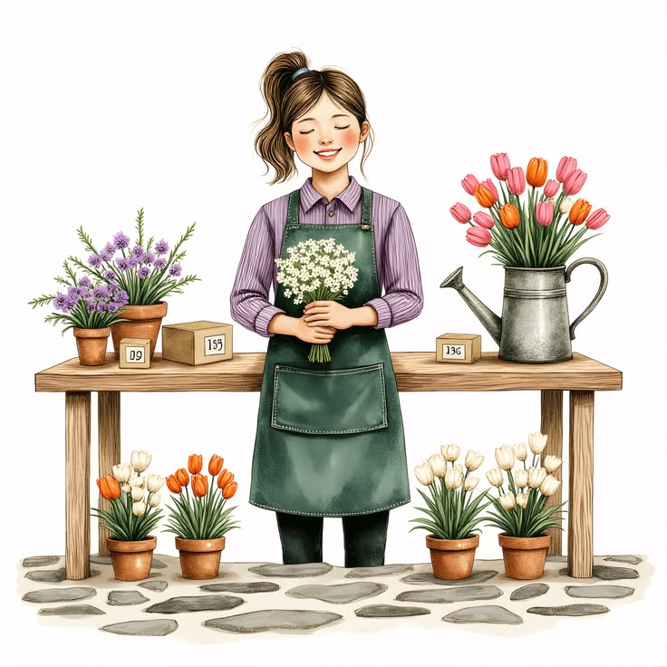
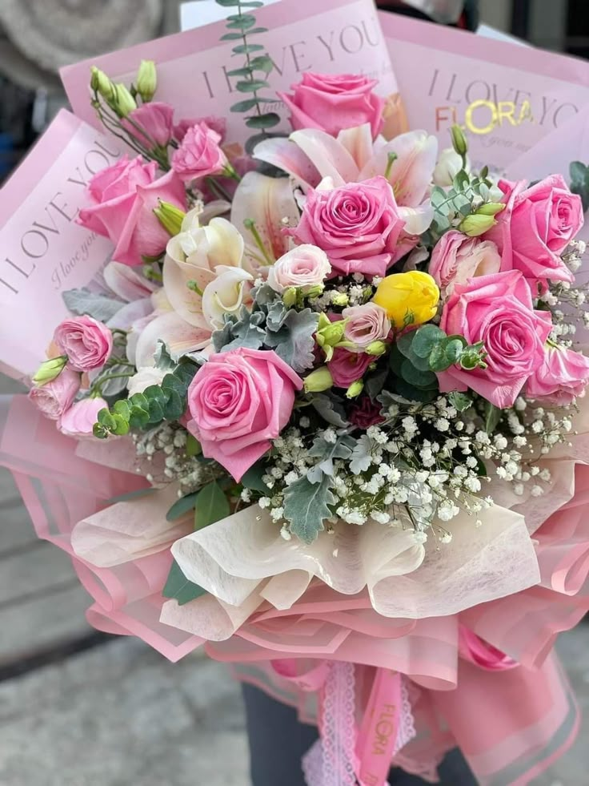
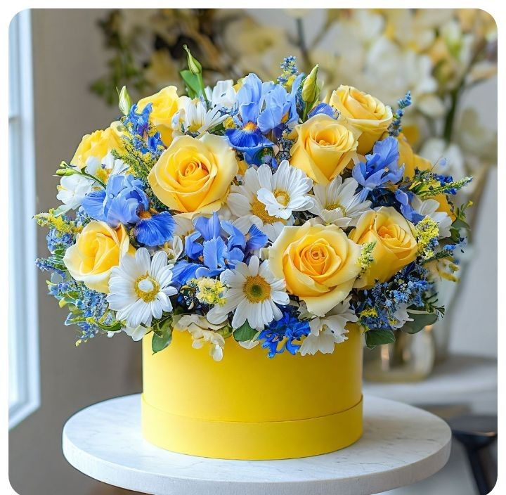

Transformamos momentos cotidianos en recuerdos inolvidables a través del lenguaje de las flores.
Trabajamos solo con proveedores locales que respetan el ciclo natural de la tierra, asegurando colores vibrantes en cada pétalo
No solo vendemos flores diseñamos emociones. Cada arreglo está pensado para transmitir lo que las palabras a veces no alcanzan a decir.
Flores seleccionadas directamente de los mejores cultivo para garantizar su aroma y durabilidad.
Entregamos tus arreglos el mismo dia, con el cuidado y la dlicadeza que tus sorpresas merecen.
Cada ramo es una pieza de arte exclusiva, creada por floristas apasionados.
Recibe flores frescas en la puerta de tu casa u oficina de forma semanal o mensual para mantener tus espacios siempre vivos.
Aprende el arte del diseño floral con nuestros expertos. Diseña tus propios centros de mesa y ramos desde cero.
Creamos la atmósfera perfecta para tu gran día. Decoración integral para ceremonias, banquetes y momentos especiales.

Traemos variedades únicas de cultivos seleccionados. Encuentra orquídeas, anturios y especies poco comunes para quienes buscan un detalle verdaderamente original.

Nuestras rosas mixtas y tulipanes premium nunca fallan. Seleccionados en su punto óptimo de apertura para que disfrutes de su máxima belleza por mucho más tiempo.

El secreto de nuestros diseños está en el fondo. Combinamos eucaliptos, ramas aromáticas y texturas verdes que le dan un estilo orgánico y silvestre a cada ramo.